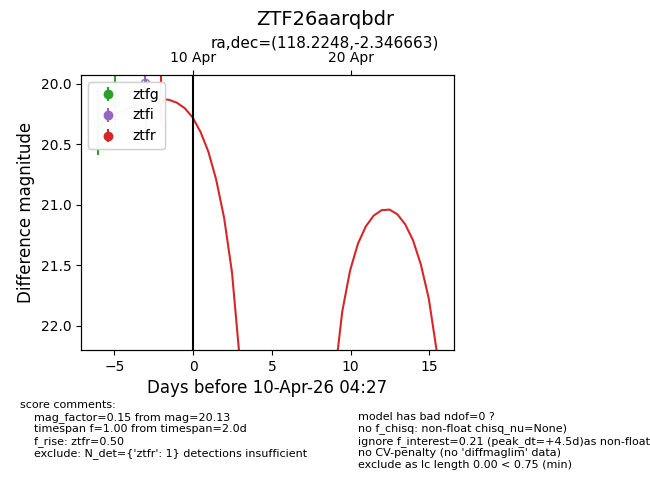
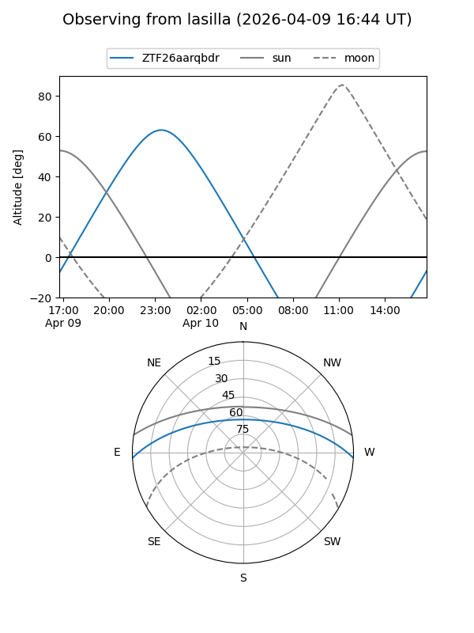
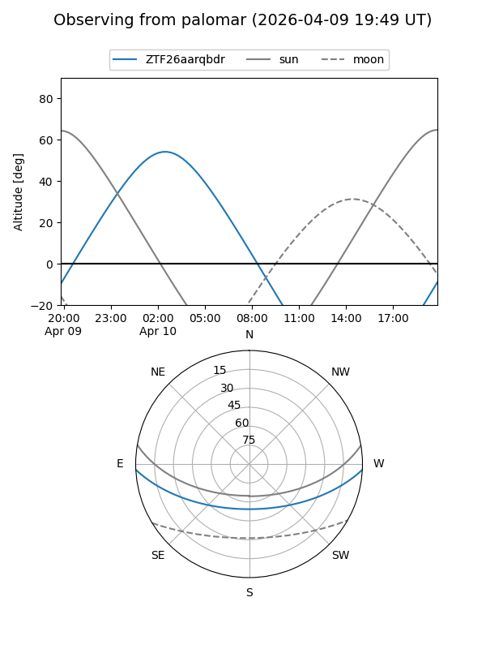
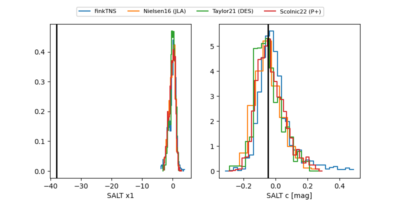

ZTF26aarqbdr
Target ZTF26aarqbdr at 2026-04-10 04:34
Aliases and brokers:
FINK: link
Lasair: link
ALeRCE: link
alt names
ZTF26aarqbdr (ztf,fink_ztf)
Coordinates:
equatorial (ra, dec) = 118.2248,-2.34666
equatorial (HMS+DMS) = 07:52:53.96,-02:20:47.99
galactic (l, b) = (222.1968,+12.53024)
Flags:
Photometry:
last ztfr=20.13
1 ztfr detections
Lightcurve

Visibility


Additional plots
